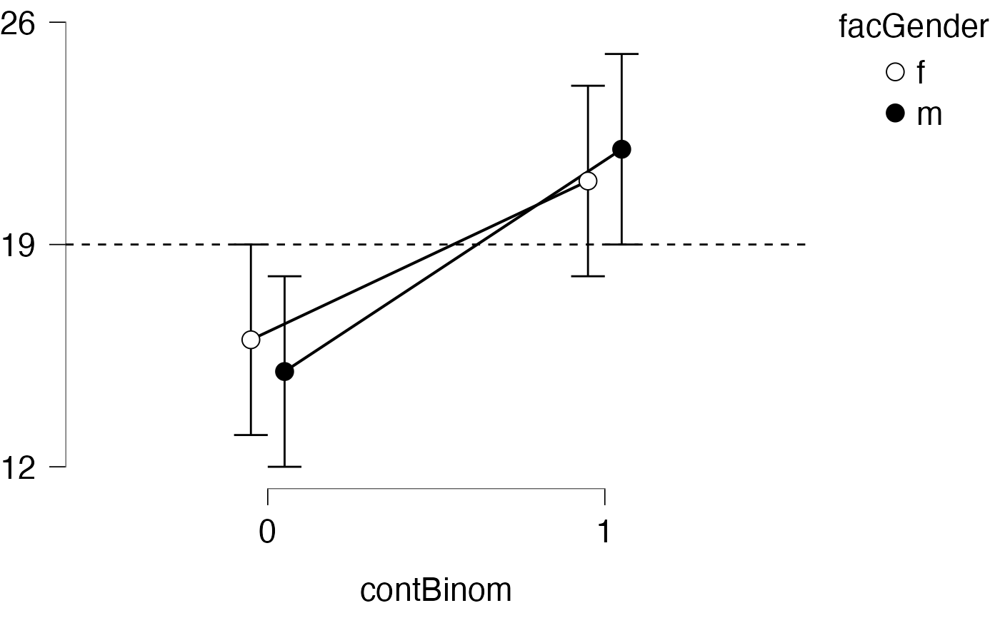
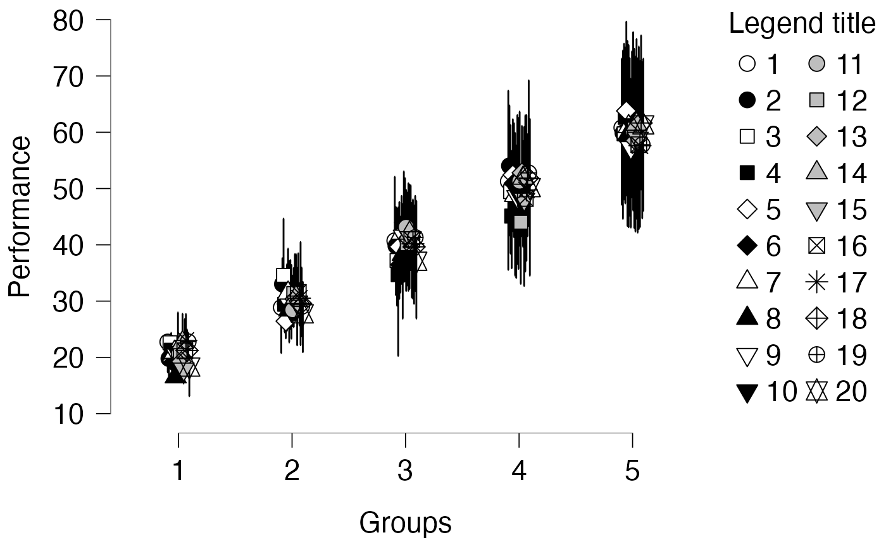

descriptivesPlot.RdDescriptive plot of categorical variable (x-axis) vs. a continuous variable (y-axis)
descriptivesPlot(
x,
y,
ciLower = NULL,
ciUpper = NULL,
xName = NULL,
yName = NULL,
group = NULL,
groupName = NULL,
horizontalLine = NULL,
horizontalLineLineType = "dashed",
position = ggplot2::position_dodge(0.2),
lineSize = 0.7,
pointSize = 4,
errorbarWidth = 0.2,
noXLevelNames = length(x) == 1L,
breaksAtExtremaOnly = TRUE,
connectedPoints = TRUE,
legendPosition = if (is.null(group)) "none" else "right"
)character vector indicating the groups shown on the x-axis.
numeric vector indicating the y-values.
numeric vector with the lower bound of the confidence interval.
numeric vector with the upper bound of the confidence interval.
character, name to use as the x-axis title.
character, name to use as the y-axis title.
character vector indicating group membership, which is used for shape and fill color
character, name to show as the legend title.
numeric, draw a horizontal asymptote at this y-value.
line type of the horizontal asymptote.
a value for the position argument of e.g., geom_line.
a value for the size argument of geom_line.
a value for the size argument of geom_point.
a value for the width argument of geom_errorbar.
Logical, should the level names on the x-axis be hidden?
Logical, Should only the outermost y-axis breaks be shown?
Logical, Should the dots be connected with lines?
Indicate the legend position (passed to theme).
a ggplot2 object.
x <- "A"
y <- -0.188
ciLower <- y - .1
ciUpper <- y + .1
descriptivesPlot(x, y, ciLower, ciUpper, horizontalLine = -.1)
x <- c("Fast", "Slow")
y <- c(15, 22)
ciLower <- y - 3
ciUpper <- y + 3
xName <- "Condition"
yName <- "Response time"
descriptivesPlot(x, y, ciLower, ciUpper, xName, yName, horizontalLine = 18.5)
x <- c("0", "1", "0", "1")
y <- c(15, 22, 16, 21)
ciLower <- y - 3
ciUpper <- y + 3
xName <- "contBinom"
group <- c("m", "m", "f", "f")
groupName <- "facGender"
descriptivesPlot(x, y, ciLower, ciUpper, xName, group = group, groupName = groupName,
horizontalLine = 19)

set.seed(42)
kx <- 5
kg <- 20
n <- kx * kg
x <- as.character(rep(1:kx, kg))
y <- rnorm(n, 10 + 10 * as.numeric(x), 2)
ciLower <- y - rnorm(n, 3 * as.numeric(x), 2)
ciUpper <- y + rnorm(n, 3 * as.numeric(x), 2)
group <- rep(seq_len(kg), each = kx)
xName <- "Groups"
yName <- "Performance"
groupName <- "Legend title"
descriptivesPlot(x, y, ciLower, ciUpper, xName, yName, group = group, groupName = groupName,
breaksAtExtremaOnly = FALSE, connectedPoints = FALSE)
